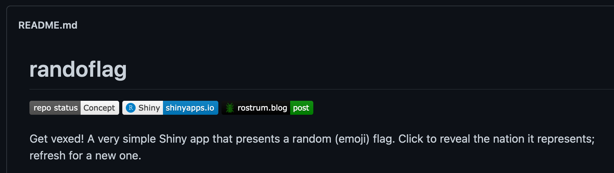

# install.packages("remotes")
remotes::install_github("matt-dray/badgr")
tl;dr
Use the {badgr} package to make a clickable README badge for a repo that contains an R Shiny app:
Badgr badgr badgr
I made the {badgr} R package to take advantage of the full flexibility of shields.io—a service that builds README badges from a supplied URL string—from within R itself.1 You can find the source for the package on GitHub, visit its site built with {pkgdown}, or read a blog post about its inception.
Wait, what’s a README badge? It’s one of those little clickable buttons that provides at-a-glance info about a code repository, like its test coverage or build status.
Turns out you can make custom badges by building a special URL to shields.io. For example, I use custom badges to tell people that a repo has an associated blog post. This one goes to the post about {badgr}:

Recently I added a badge to each of my GitHub repositories that contain a Shiny app. The purpose is to let visitors:
- know that the repo contains a Shiny app
- know whether the app is hosted on the internet
- click the badge to go directly to the live app
I put out a tweet about this that got a little traction, so I figured it would be worthwhile to record the idea more permanently.
Install
First, you can install the {badgr} package from GitHub using the {remotes} package.
At time of writing, the package should ‘just work’, though it’s dependent ultimately on the shields.io service, of course. Leave an issue if you find something wrong.
Template
The code is in a GitHub Gist, should you want to access or bookmark it there. It’s a call to the get_badge() function:
badgr::get_badge(
# Badge label
label = "Shiny", # left-side text
label_color = "white", # left-side colour
# Badge message
message = "shinyapps.io", # right-side text
color = "blue", # right-side colour
# Logo
logo_simple = "RStudio", # named icon from simpleicons.org
logo_color = "blue", # colour of simpleicons.org icon
# Markdown link
md_link = "https://matt.dray.shinyapps.io/randoflag/", # clickable link URL
# Convenience arguments
browser_preview = TRUE, # preview badge in your browser
to_clipboard = TRUE # copies markdown to paste into readme
)# Opening browser to display badge preview
# Badge Markdown added to clipboard
# [1] "[](https://matt.dray.shinyapps.io/randoflag/)"The output is a Markdown string that you can paste into your README. You can see the string is actually a link within a link: the URL to the shields.io badge is wrapped by a link to the Shiny app itself.
Conveniently, the to_clipboard = TRUE argument copies the string to your clipboard and browser_preview = TRUE opens a browser window with a preview of your badge in a new tab. You’ll notice these outcomes are referenced in the output from the function.
Pasting that string into your Markdown or R Markdown README results in this badge when rendered:
In this example, the badge is from the repo for ‘randoflag’, which is a guessing-game Shiny app hosted on shinyapps.io, which serves a random emoji flag. You can read about that app in an earlier blog post.
Note also that {badgr} is capable of incorporating bespoke icons, but we didn’t need to provide a custom RStudio logo because shields.io can easily display any icon that’s already part of simpleicons.org.
Variants
I think the badge is a useful at-a-glance recognition that the repo contains a Shiny app, whether it’s hosted or not, and a convenient clickable link to the app itself.
I think the wording on the right-hand side of the badge is a good place to indicate the app’s status. Text variants could, for example, be:
shinyapps.io(the app is live on RStudio’s shinyapps.io service)not hosted(the repo contains a Shiny app, but it’s not hosted online)not yet hosted(the Shiny app in the repo is in development, but not yet live on the internet)
I’ve used all three of these so far, but you can use whatever text you want, really.
I’ve already got use out of custom Shiny badges for my repos. I look forward to seeing some more in the wild.
Environment
Session info
Last rendered: 2023-07-17 18:43:27 BSTR version 4.3.1 (2023-06-16)
Platform: aarch64-apple-darwin20 (64-bit)
Running under: macOS Ventura 13.2.1
Matrix products: default
BLAS: /Library/Frameworks/R.framework/Versions/4.3-arm64/Resources/lib/libRblas.0.dylib
LAPACK: /Library/Frameworks/R.framework/Versions/4.3-arm64/Resources/lib/libRlapack.dylib; LAPACK version 3.11.0
locale:
[1] en_US.UTF-8/en_US.UTF-8/en_US.UTF-8/C/en_US.UTF-8/en_US.UTF-8
time zone: Europe/London
tzcode source: internal
attached base packages:
[1] stats graphics grDevices utils datasets methods base
other attached packages:
[1] badgr_0.1.1
loaded via a namespace (and not attached):
[1] digest_0.6.31 base64enc_0.1-3 fastmap_1.1.1 xfun_0.39
[5] knitr_1.43.1 htmltools_0.5.5 rmarkdown_2.23 cli_3.6.1
[9] compiler_4.3.1 rstudioapi_0.15.0 tools_4.3.1 clipr_0.8.0
[13] evaluate_0.21 yaml_2.3.7 rlang_1.1.1 jsonlite_1.8.7
[17] htmlwidgets_1.6.2Reuse
CC BY-NC-SA 4.0